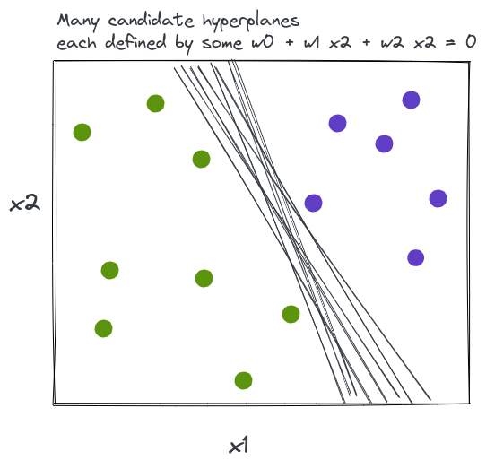
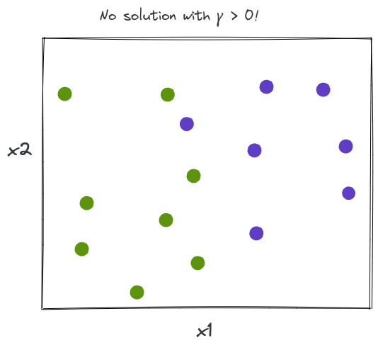
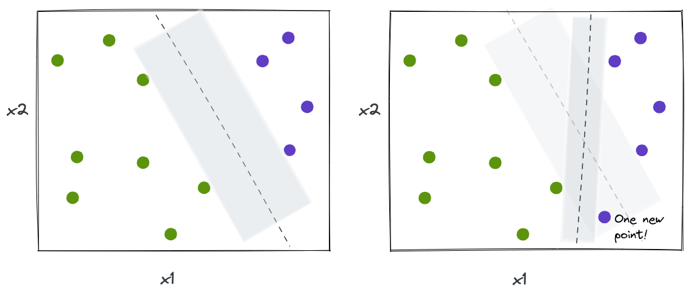
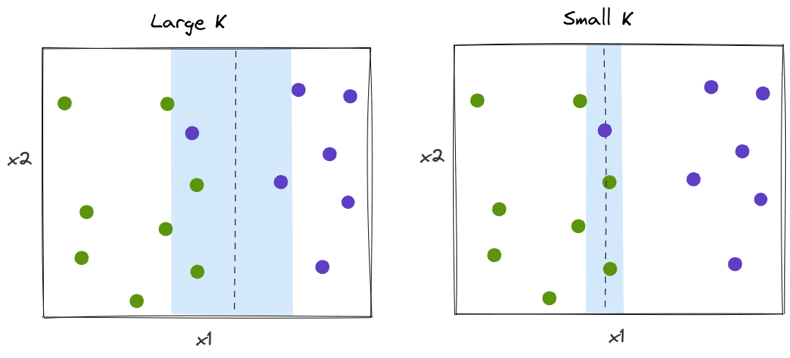

Support vector machines
Fraida Fund

net ID (e.g. ff524) and
"Continue".
Maximal margin classifier
Binary classification problem
- \(N\) training samples, each with \(p\) features \(\mathbf{x}_1, \ldots, \mathbf{x}_N \in \mathbb{R}^p\)
- Class labels \(y_1, \ldots, y_N \in \{-1, 1\}\)
Linear separability
The problem is perfectly linearly separable if there exists a separating hyperplane \(H_i\) such that
- all \(\mathbf{x} \in C_i\) lie on its positive side, and
- all \(\mathbf{x} \in C_j, j \neq i\) lie on its negative side.
Separating hyperplane (1)
The separating hyperplane has the property that for all \(i=1,\ldots,N\),
\[w_0 + \sum_{j=1}^p w_j x_{ij} > 0 \text{ if } y_i = 1\]
\[w_0 + \sum_{j=1}^p w_j x_{ij} < 0 \text{ if } y_i = -1\]
Separating hyperplane (2)
Equivalently:
\[\begin{equation} y_i \left(w_0 + \sum_{j=1}^p w_j x_{ij} \right) > 0 \label{eq:sep-no-margin} \end{equation}\]
Using the hyperplane to classify
Then, we can classify a new sample \(\mathbf{x}\) using the sign of
\[z = w_0 + \sum_{j=1}^p w_j x_{j}\]
The score \(z\) is real-valued; the final class is
\[\hat{y}=\operatorname{sign}(z).\]
We can use \(|z|\) to measure distance from the hyperplane. Larger \(|z|\) means the sample is farther from the hyperplane.
Which separating hyperplane is best?

Margin
For any “candidate” hyperplane,
- Compute distance from each sample to separating hyperplane.
- Smallest distance among all samples is called the margin.
Classifier that maximizes the margin
- Among all separating hyperplanes, choose the one with the largest margin!
- Find the widest “slab” we can fit between the two classes; use the midline of this “slab”.
Support vectors
- Points that lie on the border of maximal margin hyperplane are support vectors
- They “support” the maximal margin hyperplane: if these points move, then the maximal margin hyperplane moves
- Maximal margin hyperplane is not affected by movement of any other point, as long as it doesn’t cross borders!
Constructing the maximal margin classifier
To construct this classifier, we will set up a constrained optimization problem with:
- an objective
- one or more constraints to satisfy
What should the objective/constraints be in this scenario?
Constructing the maximal margin classifier (1)
\[\begin{equation} \operatorname*{maximize}_{\mathbf{w}, \gamma} \gamma \end{equation}\]
\[\begin{equation} \text{subject to: }\sum_{j=1}^{p} w_j^2 = 1 \end{equation}\]
\[\begin{equation} \text{and } y_i \left(w_0 + \sum_{j=1}^{p} w_j x_{ij} \right) \geq \gamma, \forall i \end{equation}\]
Constructing the maximal margin classifier (2)
The constraints ensure that
- Each observation is on the correct side of the hyperplane, and
- at least \(\gamma\) away from the hyperplane
and \(\gamma\) is maximized.
Problems with MM classifier (1)

Problems with MM classifier (2)

Support vector classifier
Basic idea
- Generalization of MM classifier to non-separable case
- Use a hyperplane that almost separates the data
- “Soft margin”
Constructing the support vector classifier
\[\begin{equation} \operatorname*{maximize}_{\mathbf{w}, \mathbf{\epsilon}, \gamma} \gamma \end{equation}\]
\[\begin{equation} \text{subject to: } \sum_{j=1}^{p} w_j^2 = 1 \end{equation}\]
\[\begin{equation} y_i \left(w_0 + \sum_{j=1}^{p} w_j x_{ij} \right) \geq \gamma(1-\epsilon_i), \quad \forall i \end{equation}\]
\[\begin{equation} \epsilon_i \geq 0, \quad \forall i, \quad \sum_{i=1}^N \epsilon_i \leq K \end{equation}\]
Support vector
For a support vector classifier, the only points that affect the classifier are:
- Points that lie on the margin boundary
- Points that violate margin
These are the support vectors.
Illustration of effect of \(K\)

\(K\) controls bias-variance tradeoff
- Wide margin (\(K\) large): many support vectors, low variance, high bias.
- Narrow margin (\(K\) small): few support vectors, high variance, low bias.
Solution
Fitting the support vector classifier
\[ \begin{aligned} \operatorname*{minimize}_{\mathbf{w}, \mathbf{\epsilon}} \quad & \frac{1}{2} \sum_{j=1}^p w_j^2 + C \sum_{i=1}^N \epsilon_i \\ \text{subject to} \quad & y_i(w_0 + \sum_{j=1}^p w_j x_{ij}) \geq 1-\epsilon_i, \quad \forall i \\ & \epsilon_i \geq 0, \quad \forall i \end{aligned} \]
- \(\frac{1}{2} \sum_j w_j^2\): small when the margin is wide
- \(C \sum_i \epsilon_i\): penalty for margin violations; \(C\) sets the tradeoff
- Constraints: each sample is on the correct side of its margin boundary, up to its slack \(\epsilon_i\)
Dual formulation (we won’t derive it)
Using Lagrange multipliers, the problem can be rewritten in an equivalent dual form, with one variable \(\alpha_i\) per training sample:
\[ \begin{aligned} \operatorname*{maximize}_{\alpha_i \geq 0, \forall i } \quad & \sum_{i=1}^N \alpha_i - \frac{1}{2} \sum_{i=1}^N \sum_{j=1}^N \alpha_i \alpha_j y_i y_j \mathbf{x}_i^T \mathbf{x}_j \\ \text{subject to} \quad & \sum_{i=1}^N \alpha_i y_i = 0 \\ & 0 \leq \alpha_i \leq C, \quad \forall i \end{aligned} \]
- The data only appears through inner products \(\mathbf{x}_i^T \mathbf{x}_j\) between pairs of samples.
- \(\alpha_i\) is non-zero only for support vectors.
Solution (we won’t derive it)
The solver gives us a number \(\alpha_i \geq 0\) for every training sample, and the coefficients are
\[ \mathbf{w} = \sum_{i=1}^N \alpha_i\, y_i\, \mathbf{x}_i \]
- \(\alpha_i = 0\) for every sample that is not a support vector
- so only the support vectors contribute to the sum
- \(w_0\) can be found from any support vector that lies exactly on the margin
Why this form matters
In the dual formulation, the training data only appears through inner products \(\mathbf{x}_i^T \mathbf{x}_j\) between pairs of samples.
This is what makes the kernel trick possible, which we’ll discuss next.
Loss function
This problem is equivalent to minimizing hinge loss:
\[\operatorname*{minimize}_{\mathbf{w}} \left( \sum_{i=1}^N \max \big(0,\, 1 - y_i z_i\big) + \frac{1}{C} \sum_{j=1}^p w_j^2 \right)\]
where \(z_i = w_0 + \sum_{j=1}^{p} w_j x_{ij}\).
Compared to logistic regression
- Hinge loss: zero for points that are correct and outside margin.
- Logistic regression loss: small but non-zero loss for points far from separating hyperplane.
Relationship between SVM and other models
- Like a logistic regression - linear classifier, separating hyperplane is \(w_0 + \sum_{j=1}^p w_j x_{ij} = 0\)
- Like a weighted KNN - the decision score is a weighted sum of support-vector labels, with weights proportional to the similarity between the test sample and each support vector.
Correlation interpretation (1)
Given a new sample \(\mathbf{x}\) to classify, compute
\[ \begin{aligned} z(\mathbf{x}) &= w_0 + \sum_{j=1}^p w_j x_j \\[6pt] &= w_0 + \sum_{i=1}^N \alpha_i y_i \left( \sum_{j=1}^p x_{ij} x_j \right) \\[6pt] &= w_0 + \sum_{i=1}^N \alpha_i y_i \, (\mathbf{x}_i^\top \mathbf{x}) \end{aligned} \]
Measures inner product (a kind of “correlation”) between new sample and each support vector.
Correlation interpretation (2)
Final class prediction (assuming \(-1,1\) labels):
\[\hat{y}(\mathbf{x}) = \text{sign} ({z}(\mathbf{x}))\]
The score \(z(\mathbf{x})\) is a weighted sum of support-vector labels; \(\hat{y}(\mathbf{x})\) is its sign.